In this class we will use the package agricolae
for our experimental units randomization.
The simplest experimental design is the Completely Randomized Design, or CRD for short. With this design, all conditions are assumed to be homogeneous. This means that the experimental units are randomly assign to an experimental unit with no constraints.
library(tidyverse)
library(agricolae) # package that enables randomization for different experimental designs
library(ggsci) # color palettes
library(psych)
library(car)
library(emmeans)
trt<- LETTERS[1:6] # Our example will have 6 treatment labels using the first 6 letters
CRD <- design.crd(trt=trt, r=5, serie=0, seed=09041909)
CRD## $parameters
## $parameters$design
## [1] "crd"
##
## $parameters$trt
## [1] "A" "B" "C" "D" "E" "F"
##
## $parameters$r
## [1] 5 5 5 5 5 5
##
## $parameters$serie
## [1] 0
##
## $parameters$seed
## [1] 9041909
##
## $parameters$kinds
## [1] "Super-Duper"
##
## $parameters[[7]]
## [1] TRUE
##
##
## $book
## plots r trt
## 1 1 1 A
## 2 2 1 E
## 3 3 1 D
## 4 4 1 F
## 5 5 1 C
## 6 6 2 D
## 7 7 2 A
## 8 8 1 B
## 9 9 2 F
## 10 10 2 E
## 11 11 3 A
## 12 12 4 A
## 13 13 2 B
## 14 14 3 E
## 15 15 5 A
## 16 16 3 F
## 17 17 4 F
## 18 18 3 D
## 19 19 4 E
## 20 20 3 B
## 21 21 4 B
## 22 22 5 F
## 23 23 2 C
## 24 24 4 D
## 25 25 5 E
## 26 26 3 C
## 27 27 5 B
## 28 28 4 C
## 29 29 5 C
## 30 30 5 DIn the plot below we can see the layout of our CRD experiment. The fill colors represent the treatments and labels are only the plot ID.
# Some adjustment from the agricolae output to display our experimental units in a plot
CRD_layout <- CRD$book %>%
mutate(row = rep(1:5, each=6),
colum = rep(1:6, 5) )
head(CRD_layout)## plots r trt row colum
## 1 1 1 A 1 1
## 2 2 1 E 1 2
## 3 3 1 D 1 3
## 4 4 1 F 1 4
## 5 5 1 C 1 5
## 6 6 2 D 1 6 ggplot(CRD_layout, aes(y=row, x = colum)) +
geom_tile(aes(fill=trt), width=.95, height=0.95, color = "black", size = 0.5)+
geom_label(aes(label =plots), size = 9)+
scale_y_reverse(expand = c(0.01,.01), breaks = 1:5)+
scale_x_continuous(expand = c(0.01,0.01), breaks = 1:6)+
scale_fill_npg()+
labs(x=NULL, y=NULL, fill = "Treatments",
title = "Experimental layout for CRD",
subtitle = "CRD with six treatments and five replication")+
theme(
panel.background = element_blank(),
axis.text = element_text(size=rel(1.5), color="black", face = "bold"),
plot.title = element_text(size=rel(2), color="black", face = "bold"),
plot.subtitle = element_text(size=rel(1.2), color="black", face = "bold"),
legend.title = element_text(size=rel(1.3), color="black", face = "bold"),
legend.text = element_text(size = rel(1.2)),
legend.justification = "top" )## Warning: Using `size` aesthetic for lines was deprecated in ggplot2 3.4.0.
## ℹ Please use `linewidth` instead.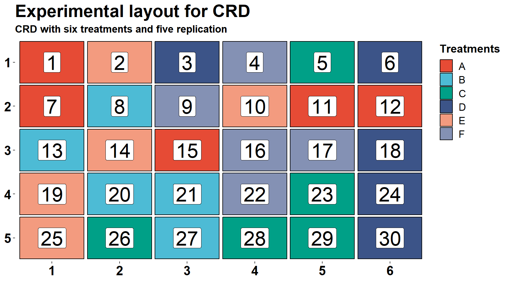
In the Randomized Complete Block Design, we constrain the randomization into blocks. The assumption is that the blocks are homogeneous but that there may be differences across blocks. As such, each treatment factor is assigned to a different position within each block. This is the most basic of the constrained designs from which more complicated designs are developed.
trt <- LETTERS[1:6]
RCBD <- design.rcbd(trt, r=4, serie=2, seed=09041909)
RCBD## $parameters
## $parameters$design
## [1] "rcbd"
##
## $parameters$trt
## [1] "A" "B" "C" "D" "E" "F"
##
## $parameters$r
## [1] 4
##
## $parameters$serie
## [1] 2
##
## $parameters$seed
## [1] 9041909
##
## $parameters$kinds
## [1] "Super-Duper"
##
## $parameters[[7]]
## [1] TRUE
##
##
## $sketch
## [,1] [,2] [,3] [,4] [,5] [,6]
## [1,] "E" "F" "D" "A" "C" "B"
## [2,] "B" "D" "C" "F" "A" "E"
## [3,] "F" "C" "B" "D" "E" "A"
## [4,] "B" "E" "D" "A" "C" "F"
##
## $book
## plots block trt
## 1 101 1 E
## 2 102 1 F
## 3 103 1 D
## 4 104 1 A
## 5 105 1 C
## 6 106 1 B
## 7 201 2 B
## 8 202 2 D
## 9 203 2 C
## 10 204 2 F
## 11 205 2 A
## 12 206 2 E
## 13 301 3 F
## 14 302 3 C
## 15 303 3 B
## 16 304 3 D
## 17 305 3 E
## 18 306 3 A
## 19 401 4 B
## 20 402 4 E
## 21 403 4 D
## 22 404 4 A
## 23 405 4 C
## 24 406 4 FIn the plot below, we have an example of a RCBD with six treatment
and four replications. Each block is represented with a different
background color and the first digit of the experimental ID number.
These values are obtained from the option series = 2
argument with the function design.rbcd, in the
agricolae package.
RCBD_layout <- RCBD$book %>%
mutate(row = block, colum = rep(1:6, 4) )
ggplot(RCBD_layout, aes(y=row, x = colum)) +
geom_blank()+
geom_rect(aes(xmin=.4,xmax=6.6,ymin=3.5,ymax=4.5),fill="#bfd3e6",color="black") + # Block 1
geom_rect(aes(xmin=.4,xmax=6.6,ymin=2.5,ymax=3.5),fill="#fdae61",color="black") + # Block 2
geom_rect(aes(xmin=.4,xmax=6.6,ymin=1.5,ymax=2.5),fill="#abdda4",color="black") + # Block 3
geom_rect(aes(xmin=.4,xmax=6.6,ymin=0.5,ymax=1.5),fill="#cccccc",color="black") + # Block 4
geom_tile(aes(fill=trt), width=.95, height=0.80, color = "black", size = 1)+
geom_label(aes(label =plots), size = 9)+
scale_y_discrete(expand = c(0.1,.01), limits = rev)+
scale_x_continuous(expand = c(0.01,0.01), breaks = 1:6)+
scale_fill_npg()+
labs(x=NULL, y=NULL, fill = "Treatments",
title = "Experimental layout for RCBD",
subtitle = "Blocks are represented by the row and using different background colors.\nEach block (i.e., row) contains one replication of each treatment")+
theme(
panel.background = element_blank(),
axis.text = element_text(size=rel(1.5), color="black", face = "bold"),
plot.title = element_text(size=rel(2), color="black", face = "bold"),
plot.subtitle = element_text(size=rel(1.2), color="black", face = "bold"),
legend.title = element_text(size=rel(1.3), color="black", face = "bold"),
legend.text = element_text(size = rel(1.2)),
legend.justification = "top" )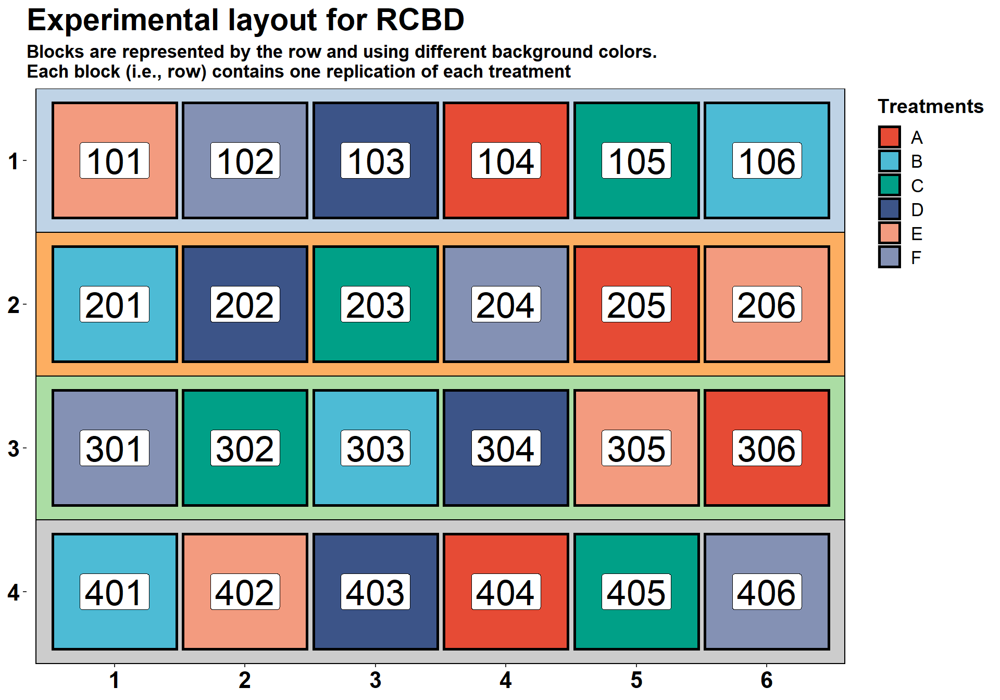
Blocks do not necessarily need to be in the row. In fact, since our goal with blocking is to keep the experimental units as homogenous as possible, it may make more sense to have our blocks in a different layout than using traditional rows. For example, based on the figure above, it is possible that plots 101 and 201 have more in common than plots 101 and 106, even though the first two are in different blocks and the second are in the same. In the example below, we illustrate another way to design the experiment using a RCBD.
RCBD_layout2 <- RCBD$book %>%
mutate(row = factor(c(1,1,1,2,2,2,1,1,1,2,2,2,3,3,3,4,4,4,3,3,3,4,4,4)),
colum = factor(c(1,2,3,1,2,3,4,5,6,4,5,6,1,2,3,1,2,3,4,5,6,4,5,6)))
ggplot(RCBD_layout2, aes(y=row, x = colum)) +
geom_blank()+
geom_rect(aes(xmin=0.5,xmax=3.5,ymin=2.5,ymax=4.5), fill="#bfd3e6",color="black") + # Block 1
geom_rect(aes(xmin=3.5,xmax=6.5,ymin=2.5,ymax=4.5), fill="#fdae61",color="black") + # Block 2
geom_rect(aes(xmin= 0.5,xmax=3.5,ymin=0.5,ymax=2.5),fill="#abdda4",color="black") + # Block 3
geom_rect(aes(xmin=3.5,xmax=6.5,ymin=0.5,ymax=2.5), fill="#cccccc",color="black") + # Block 4
geom_tile(aes(fill=trt), width=.85, height=0.80, color = "black", size = 1)+
geom_label(aes(label =plots), size = 11)+
scale_y_discrete(limits = rev)+
scale_x_discrete(expand = c(0.01,0.01))+
scale_fill_npg()+
labs(x="Columns", y="Blocks", fill = "Treatments",
title = "Experimental layout for RCBD",
subtitle = "Alternative blocking layout")+
theme(
axis.ticks = element_blank(),
panel.background = element_blank(),
axis.text = element_text(size=rel(1.5), color="black", face = "bold"),
plot.title = element_text(size=rel(2), color="black", face = "bold"),
plot.subtitle = element_text(size=rel(1.2), color="black", face = "bold"),
legend.title = element_text(size=rel(1.3), color="black", face = "bold"),
axis.title.x = element_text(size=rel(1.3), color="black", face = "bold", hjust = .95),
axis.title.y = element_text(size=rel(1.3), color="black", face = "bold", hjust = .1),
legend.text = element_text(size = rel(1.2)),
legend.justification = "top")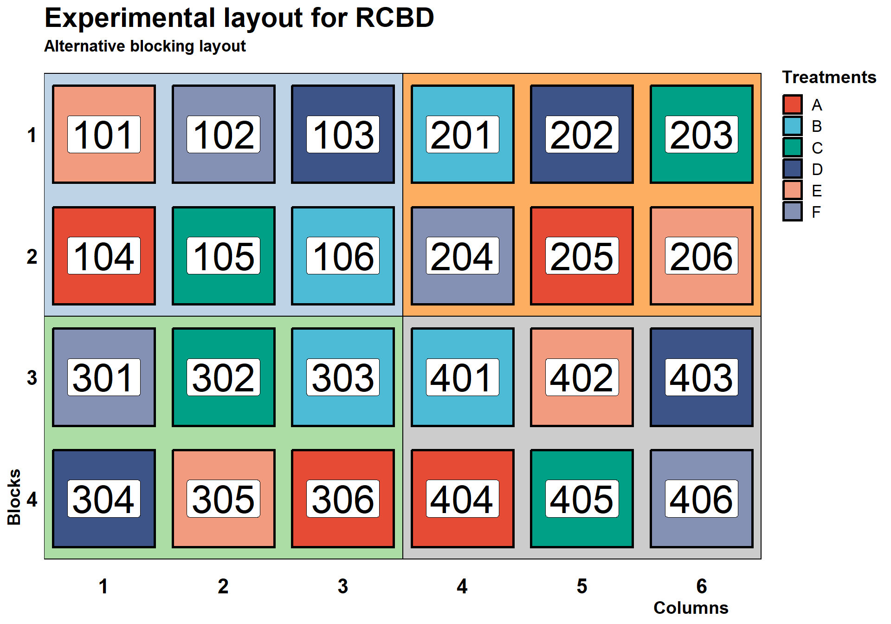
In this section, we will see some examples of factorial designs.
Factorial designs are experiments that contains more than one factor,
such as cultivar (Factor A) and fungicide (Factor B). This experimental
design creates all factor combinations to construct the randomization.
In the plot below, there is an experimental layout with two factors, each one with three levels. For this example, we will not use the plot ID number, we will use the experimental unit label to show factor B. However, you could easily develop this using the same scheme of plot identification as before. In this example, the factorial design is based on a CRD. What this means is that the combination of Factor A and Factor B are randomly assigned to the experimental unit.
# Two treatments combination, each with 3 levels
treat_level<-c(3,3)
fact_CRD <- design.ab(treat_level, r=4, serie=0, design="crd", seed=09041909)
fact_CRD_layout <- fact_CRD$book %>%
mutate(row = rep(1:6, each=6),
colum = rep(1:6, 6)) %>%
mutate(A = factor(A, labels = c("A", "B", "C")),
B = factor(B, labels = c("X", "Y", "Z")))
head(fact_CRD_layout)## plots r A B row colum
## 1 1 1 B Z 1 1
## 2 2 1 C X 1 2
## 3 3 1 B Y 1 3
## 4 4 1 C Y 1 4
## 5 5 1 A Y 1 5
## 6 6 2 B Z 1 6 ggplot(fact_CRD_layout, aes(y=row, x = colum)) +
geom_tile(aes(fill=A), width=.95, height=0.95, color = "black", size = 1)+
geom_label(aes(label =B), color = "black", size = 9, label.size = NA)+
scale_y_reverse(expand = c(0.01,.01), breaks = 1:6)+
scale_x_continuous(expand = c(0.01,0.01), breaks = 1:6)+
scale_fill_manual(values = c("#E64B35FF", "#4DBBD5FF", "#00A087FF"))+
labs(x=NULL, y=NULL,
fill = "Factor A",
title = "Factorial layout using a CRD",
subtitle = "Each factor has three levels and each combination 4 replications,\n having a random assignment across the experimental units",
caption = "Factor A is represented by the fill color of the experimental unit
Factor B is represented by the label of the experiment unit")+
theme(
panel.background = element_blank(),
axis.text = element_text(size=rel(1.5), color="black", face = "bold"),
plot.title = element_text(size=rel(2), color="black", face = "bold"),
plot.subtitle = element_text(size=rel(1.2), color="black", face = "bold"),
legend.title = element_text(size=rel(1.3), color="black", face = "bold"),
legend.text = element_text(size = rel(1.2)),
legend.justification = "top" )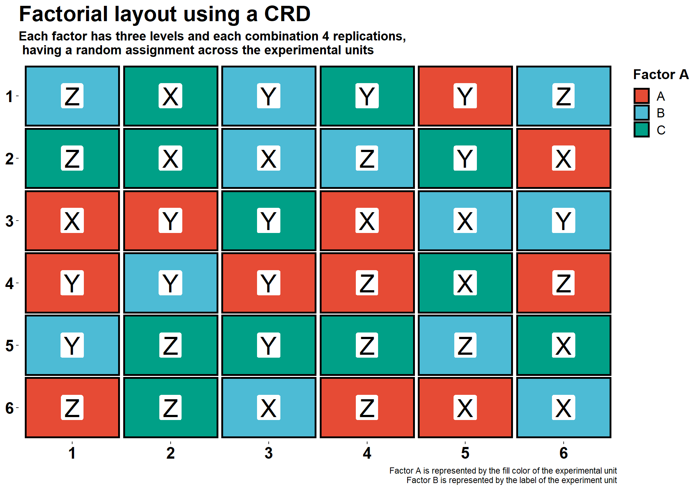
We also can have a factorial layout with a RCBD. Similar to non-factorial RCBD experiments, each block will contain one level of the treatment. Here, this is the combination of Factor A and Factor B.
fact_RCBD <- design.ab(treat_level, r=4, serie=0, design="rcbd", seed=09041909)
fact_RCBD## $parameters
## $parameters$design
## [1] "factorial"
##
## $parameters$trt
## [1] "1 1" "1 2" "1 3" "2 1" "2 2" "2 3" "3 1" "3 2" "3 3"
##
## $parameters$r
## [1] 4
##
## $parameters$serie
## [1] 0
##
## $parameters$seed
## [1] 9041909
##
## $parameters$kinds
## [1] "Super-Duper"
##
## $parameters[[7]]
## [1] TRUE
##
## $parameters$applied
## [1] "rcbd"
##
##
## $book
## plots block A B
## 1 1 1 2 2
## 2 2 1 3 3
## 3 3 1 3 2
## 4 4 1 2 1
## 5 5 1 1 2
## 6 6 1 2 3
## 7 7 1 1 3
## 8 8 1 3 1
## 9 9 1 1 1
## 10 10 2 2 3
## 11 11 2 3 3
## 12 12 2 1 3
## 13 13 2 1 2
## 14 14 2 2 2
## 15 15 2 2 1
## 16 16 2 1 1
## 17 17 2 3 1
## 18 18 2 3 2
## 19 19 3 2 2
## 20 20 3 1 3
## 21 21 3 2 1
## 22 22 3 1 2
## 23 23 3 3 1
## 24 24 3 2 3
## 25 25 3 1 1
## 26 26 3 3 3
## 27 27 3 3 2
## 28 28 4 3 2
## 29 29 4 1 2
## 30 30 4 1 3
## 31 31 4 2 2
## 32 32 4 1 1
## 33 33 4 3 1
## 34 34 4 3 3
## 35 35 4 2 1
## 36 36 4 2 3 fact_RCBD_layout <-
fact_RCBD$book %>%
mutate(row = factor(c(1,1,1,2,2,2,3,3,3, # Block 1
1,1,1,2,2,2,3,3,3, # Block 2
4,4,4,5,5,5,6,6,6, # Block 3
4,4,4,5,5,5,6,6,6)), # Block 4
colum = factor(c(1,2,3,1,2,3,1,2,3, # Block 1
4,5,6,4,5,6,4,5,6, # Block 2
1,2,3,1,2,3,1,2,3, # Block 3
4,5,6,4,5,6,4,5,6))) %>% # Block 4
mutate(A = factor(A, labels = c("A", "B", "C")),
B = factor(B, labels = c("X", "Y", "Z")))
head(fact_RCBD_layout)## plots block A B row colum
## 1 1 1 B Y 1 1
## 2 2 1 C Z 1 2
## 3 3 1 C Y 1 3
## 4 4 1 B X 2 1
## 5 5 1 A Y 2 2
## 6 6 1 B Z 2 3 ggplot(fact_RCBD_layout, aes(y=row, x = colum)) +
geom_blank()+
geom_rect(aes(xmin=0.5,xmax=3.5,ymin=3.5,ymax=6.5), fill="#bfd3e6",color="black") + # Block 1
geom_rect(aes(xmin=3.5,xmax=6.5,ymin=3.5,ymax=6.5), fill="#fdae61",color="black") + # Block 2
geom_rect(aes(xmin= 0.5,xmax=3.5,ymin=0.5,ymax=3.5),fill="#abdda4",color="black") + # Block 3
geom_rect(aes(xmin=3.5,xmax=6.5,ymin=0.5,ymax=3.5), fill="#cccccc",color="black") + # Block 4
geom_tile(aes(fill=A), width=.8, height=0.8, color = "black", size = 1)+
geom_label(aes(label =B), size = 9, label.size = NA)+
scale_y_discrete(expand = c(0.01,.01), breaks = 1:6, limits = rev)+
scale_x_discrete(expand = c(0.01,0.01), breaks = 1:6)+
scale_fill_manual(values = c("#E64B35FF", "#4DBBD5FF", "#00A087FF"), labels = c("A","B", "C"))+
scale_color_manual(values = c("#3B4992FF", "#EE0000FF", "#008B45FF"), labels = c("X","Y", "Z"))+
labs(x=NULL, y=NULL, fill = "Factor A",
title = "Factorial layout using a RCBD",
subtitle = "Each factor has three levels and each combination 4 replications",
caption = "Factor A is represented by the fill color of the experimental unit
Factor B is represented by the label of the experiment unit
Plot color background represents the block")+
theme(
panel.background = element_blank(),
axis.text = element_text(size=rel(1.5), color="black", face = "bold"),
plot.title = element_text(size=rel(2), color="black", face = "bold"),
plot.subtitle = element_text(size=rel(1.2), color="black", face = "bold"),
legend.title = element_text(size=rel(1.3), color="black", face = "bold"),
legend.text = element_text(size = rel(1.2)),
legend.justification = "top" ) 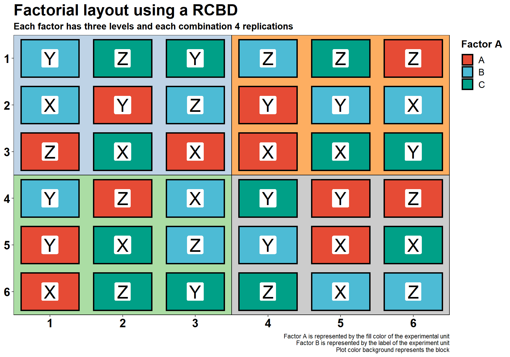
Another way to design a factorial experiment is using a split plot design. To illustrate, imagine that you want to study the effect of fungicide treatments on different cultivars with different levels of disease resistance. In some situations, we are constrained by the equipment that we can use to plant the study, or spray a pesticide, as such, we can create a study that contains a larger plot (whole plot) and smaller plots nested into the larger plot (subplots). Both the whole factor and the split-plot factor are randomly assigned to their respective experimental units. Whole plots and split-plots are randomly assigned within the plots. This is illustrated for a CRD and RBCD, respectively.
trt1<-c("V1","V2","V3") # Whole plot
trt2<-c("TA","TB","TC") # Split plot
split_CRD <- design.split(trt1, trt2,r=4, design=c("crd"),serie = 0, seed=09041909)
split_CRD_layout <- split_CRD$book %>%
mutate(row = rep(1:6, each=6),
colum = factor(rep(1:6, 6)) )
split_CRD_layout## plots splots r trt1 trt2 row colum
## 1 1 1 1 V2 TB 1 1
## 2 1 2 1 V2 TC 1 2
## 3 1 3 1 V2 TA 1 3
## 4 2 1 1 V3 TB 1 4
## 5 2 2 1 V3 TA 1 5
## 6 2 3 1 V3 TC 1 6
## 7 3 1 2 V3 TA 2 1
## 8 3 2 2 V3 TC 2 2
## 9 3 3 2 V3 TB 2 3
## 10 4 1 1 V1 TA 2 4
## 11 4 2 1 V1 TC 2 5
## 12 4 3 1 V1 TB 2 6
## 13 5 1 2 V1 TC 3 1
## 14 5 2 2 V1 TA 3 2
## 15 5 3 2 V1 TB 3 3
## 16 6 1 2 V2 TB 3 4
## 17 6 2 2 V2 TC 3 5
## 18 6 3 2 V2 TA 3 6
## 19 7 1 3 V2 TA 4 1
## 20 7 2 3 V2 TB 4 2
## 21 7 3 3 V2 TC 4 3
## 22 8 1 4 V2 TB 4 4
## 23 8 2 4 V2 TA 4 5
## 24 8 3 4 V2 TC 4 6
## 25 9 1 3 V3 TA 5 1
## 26 9 2 3 V3 TC 5 2
## 27 9 3 3 V3 TB 5 3
## 28 10 1 3 V1 TC 5 4
## 29 10 2 3 V1 TB 5 5
## 30 10 3 3 V1 TA 5 6
## 31 11 1 4 V3 TC 6 1
## 32 11 2 4 V3 TA 6 2
## 33 11 3 4 V3 TB 6 3
## 34 12 1 4 V1 TA 6 4
## 35 12 2 4 V1 TC 6 5
## 36 12 3 4 V1 TB 6 6 ggplot(split_CRD_layout, aes(y=row, x = colum)) +
geom_tile(aes(fill=trt1), width=.85, height=0.85, color = "black", size = 1)+
geom_label(aes(label =trt2), size = 9, label.size = NA)+
scale_y_reverse(expand = c(0.01,.01), breaks = 1:6)+
scale_x_discrete(expand = c(0.01,0.01), breaks = 1:6)+
scale_fill_manual(values = c("#E64B35FF", "#4DBBD5FF", "#00A087FF"), labels = c("A","B", "C"))+
labs(x=NULL, y=NULL, fill = "Factor A",
title = "Factorial experimental layout - Split plot design (CRD)",
subtitle = "Each factor has three levels and each combination 4 replications,\nDashed rectangles indicate the whole plot level",
caption = "Factor A is represented by the fill color of the experimental unit
Factor B is represented by the label of the experiment unit.
Dashed boxes for three whole plots are shown")+
theme(
panel.background = element_blank(),
axis.text = element_text(size=rel(1.5), color="black", face = "bold"),
plot.title = element_text(size=rel(2), color="black", face = "bold"),
plot.subtitle = element_text(size=rel(1.2), color="black", face = "bold"),
legend.title = element_text(size=rel(1.3), color="black", face = "bold"),
legend.text = element_text(size = rel(1.2)),
legend.justification = "top" ) +
geom_rect(aes(xmin=0.5,xmax=3.5,ymin=1.5,ymax=0.5), linetype = 2, color="black", fill = NA)+ # Plot 1
geom_rect(aes(xmin=0.5,xmax=3.5,ymin=2.5,ymax=1.5), linetype = 2, color="black", fill = NA)+ # Plot 2
geom_rect(aes(xmin=0.5,xmax=3.5,ymin=3.5,ymax=2.5), linetype = 2, color="black", fill = NA) # Plot 3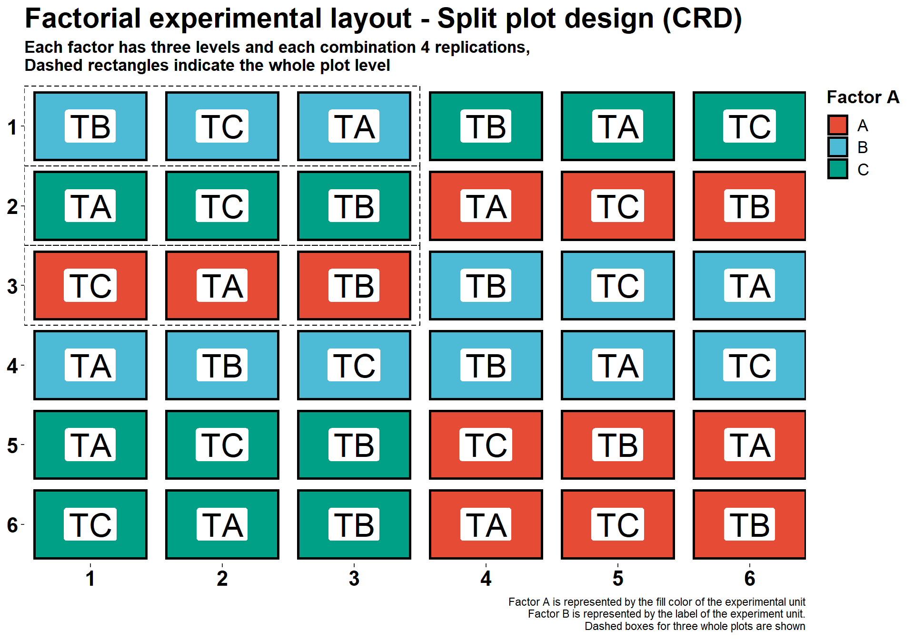
We can also have a split plot with randomized complete blocks. See the example below.
split_RCBD <- design.split(trt1, trt2,r=4, design=c("rcbd"),serie = 2,seed = 09041909)
split_RCBD## $parameters
## $parameters$design
## [1] "split"
##
## $parameters[[2]]
## [1] TRUE
##
## $parameters$trt1
## [1] "V1" "V2" "V3"
##
## $parameters$applied
## [1] "rcbd"
##
## $parameters$r
## [1] 4
##
## $parameters$serie
## [1] 2
##
## $parameters$seed
## [1] 9041909
##
## $parameters$kinds
## [1] "Super-Duper"
##
##
## $book
## plots splots block trt1 trt2
## 1 101 1 1 V1 TB
## 2 101 2 1 V1 TA
## 3 101 3 1 V1 TC
## 4 102 1 1 V3 TB
## 5 102 2 1 V3 TC
## 6 102 3 1 V3 TA
## 7 103 1 1 V2 TB
## 8 103 2 1 V2 TA
## 9 103 3 1 V2 TC
## 10 104 1 2 V1 TA
## 11 104 2 2 V1 TC
## 12 104 3 2 V1 TB
## 13 105 1 2 V3 TA
## 14 105 2 2 V3 TC
## 15 105 3 2 V3 TB
## 16 106 1 2 V2 TC
## 17 106 2 2 V2 TA
## 18 106 3 2 V2 TB
## 19 107 1 3 V2 TB
## 20 107 2 3 V2 TC
## 21 107 3 3 V2 TA
## 22 108 1 3 V3 TA
## 23 108 2 3 V3 TB
## 24 108 3 3 V3 TC
## 25 109 1 3 V1 TB
## 26 109 2 3 V1 TA
## 27 109 3 3 V1 TC
## 28 110 1 4 V2 TA
## 29 110 2 4 V2 TC
## 30 110 3 4 V2 TB
## 31 111 1 4 V1 TC
## 32 111 2 4 V1 TB
## 33 111 3 4 V1 TA
## 34 112 1 4 V3 TC
## 35 112 2 4 V3 TA
## 36 112 3 4 V3 TB split_RCBD_layout <- split_RCBD$book %>%
mutate(row = factor(c(1,1,1,2,2,2,3,3,3, # Block 1
1,1,1,2,2,2,3,3,3, # Block 2
4,4,4,5,5,5,6,6,6, # Block 3
4,4,4,5,5,5,6,6,6)), # Block 4
colum = factor(c(1,2,3,1,2,3,1,2,3, # Block 1
4,5,6,4,5,6,4,5,6, # Block 2
1,2,3,1,2,3,1,2,3, # Block 3
4,5,6,4,5,6,4,5,6))) # Block 4
ggplot(split_RCBD_layout, aes(y=row, x = colum)) +
geom_blank()+
geom_rect(aes(xmin=3.48,xmax=6.5,ymin=3.5,ymax=6.5),color = "black", fill="#fdae61") + # Block 2
geom_rect(aes(xmin=0.5,xmax=3.5,ymin=0.5,ymax=3.51),color = "black", fill="#abdda4") + # Block 3
geom_rect(aes(xmin=3.5,xmax=6.5,ymin=0.5,ymax=3.5),color = "black", fill="#cccccc") + # Block 4
geom_rect(aes(xmin=0.5,xmax=3.5,ymin=3.5,ymax=6.5), fill="#bfd3e6") + # Block 1
geom_tile(aes(fill=trt1), width=.85, height=0.85, color = "black", size = 1)+
geom_label(aes(label =trt2), color="black", size = 8, label.size = NA)+
scale_y_discrete(expand = c(.01,.01), limits = rev)+
scale_x_discrete(expand = c(.01,.01))+
scale_fill_manual(values = c("#E64B35FF", "#4DBBD5FF", "#00A087FF"), labels = c("A","B", "C"))+
labs(x=NULL, y=NULL, fill = "Factor A",
title = "Factorial experimental layout - Split plot design (RCBD)",
subtitle = "Each factor has three levels and each combination 4 replications,\nDashed rectangles indicate the whole plot level\nSubplots with the same background color are members of the same block",
caption = "Factor A is represented by the fill color of the experimental unit
Factor B is represented by the label of the experiment unit")+
theme(
panel.background = element_blank(),
axis.text = element_text(size=rel(1.5), color="black", face = "bold"),
plot.title = element_text(size=rel(2), color="black", face = "bold"),
plot.subtitle = element_text(size=rel(1.2), color="black", face = "bold"),
legend.title = element_text(size=rel(1.3), color="black", face = "bold"),
legend.text = element_text(size = rel(1.2)),
legend.justification = "top" )+
geom_rect(aes(xmin=0.5,xmax=3.5,ymin=6.5,ymax=5.5), size = 1., linetype = 2, color="black", fill = NA)+
geom_rect(aes(xmin=0.5,xmax=3.5,ymin=5.5,ymax=4.5), size = 1., linetype = 2, color="black", fill = NA)+
geom_rect(aes(xmin=0.5,xmax=3.5,ymin=4.5,ymax=3.5), size = 1., linetype = 2, color="black", fill = NA)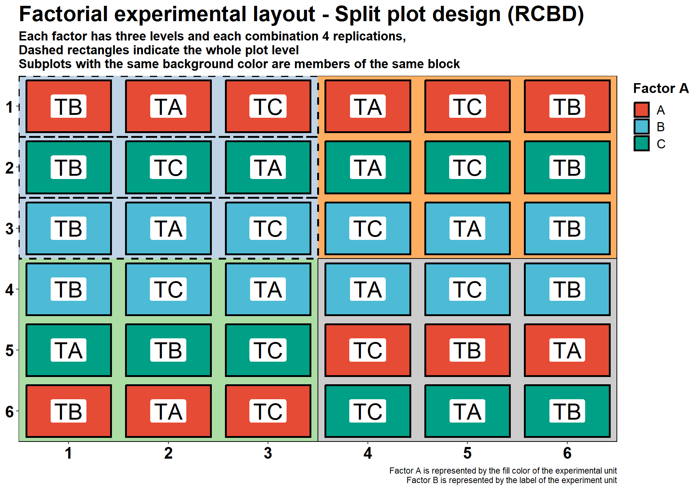
In this part, we present an introduction to different analysis of variances depending on the experimental design.
In the first example, a simple experiment is presented where the height of plants under three different treatment are measured. The experimental design is the CRD.
height_data <- data.frame(
trt = rep(c("A","B","C"), each=6),
height = c(66, 67, 74, 73, 75, 64,
85, 84, 76, 82, 79, 86,
91, 93, 88, 87, 90, 86))
height_data## trt height
## 1 A 66
## 2 A 67
## 3 A 74
## 4 A 73
## 5 A 75
## 6 A 64
## 7 B 85
## 8 B 84
## 9 B 76
## 10 B 82
## 11 B 79
## 12 B 86
## 13 C 91
## 14 C 93
## 15 C 88
## 16 C 87
## 17 C 90
## 18 C 86ggplot(height_data, aes(x=trt, y = height))+
geom_boxplot()+
geom_jitter(aes(fill = trt), width = 0.2, shape = 21, size = 5, show.legend = FALSE)+
labs(y = "Height (cm)", x = "Treatment")+
theme(axis.text = element_text(color = "black"))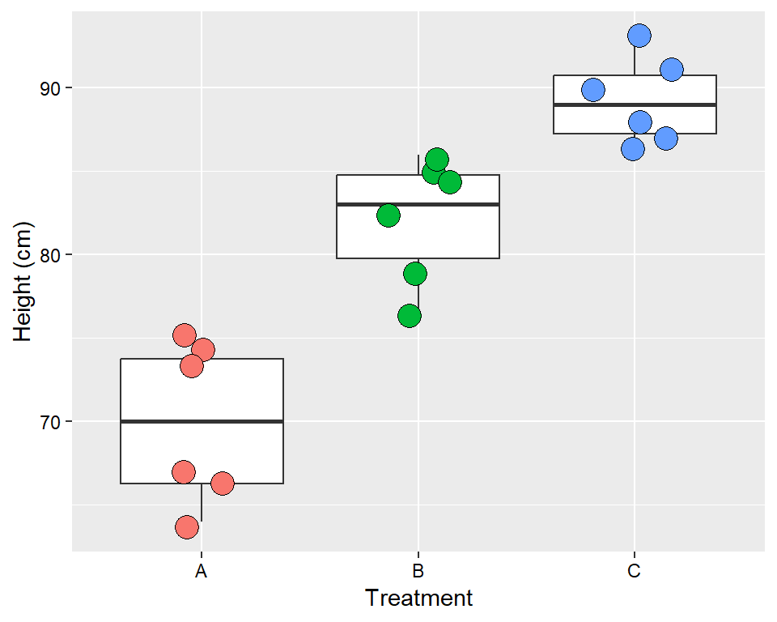
The function describeBy from the package
psych give us detailed descriptive statistics
describeBy(height ~ trt, data = height_data)##
## Descriptive statistics by group
## trt: A
## vars n mean sd median trimmed mad min max range skew kurtosis se
## height 1 6 69.83 4.71 70 69.83 5.93 64 75 11 -0.06 -2.13 1.92
## ------------------------------------------------------------
## trt: B
## vars n mean sd median trimmed mad min max range skew kurtosis se
## height 1 6 82 3.85 83 82 3.71 76 86 10 -0.42 -1.68 1.57
## ------------------------------------------------------------
## trt: C
## vars n mean sd median trimmed mad min max range skew kurtosis se
## height 1 6 89.17 2.64 89 89.17 2.97 86 93 7 0.18 -1.79 1.08We will use first the function lm, native to
R to explore the effects of each factor. The function
summary give us details of the analysis.
height_lm <- lm(height ~ trt, data = height_data)
summary(height_lm)##
## Call:
## lm(formula = height ~ trt, data = height_data)
##
## Residuals:
## Min 1Q Median 3Q Max
## -6.0000 -2.9583 0.4167 3.1250 5.1667
##
## Coefficients:
## Estimate Std. Error t value Pr(>|t|)
## (Intercept) 69.833 1.562 44.699 < 2e-16 ***
## trtB 12.167 2.209 5.507 6.03e-05 ***
## trtC 19.333 2.209 8.750 2.81e-07 ***
## ---
## Signif. codes: 0 '***' 0.001 '**' 0.01 '*' 0.05 '.' 0.1 ' ' 1
##
## Residual standard error: 3.827 on 15 degrees of freedom
## Multiple R-squared: 0.8392, Adjusted R-squared: 0.8177
## F-statistic: 39.14 on 2 and 15 DF, p-value: 1.115e-06The results of the anova analysis, separating the
effects of treatment and error.
anova(height_lm)## Analysis of Variance Table
##
## Response: height
## Df Sum Sq Mean Sq F value Pr(>F)
## trt 2 1146.33 573.17 39.139 1.115e-06 ***
## Residuals 15 219.67 14.64
## ---
## Signif. codes: 0 '***' 0.001 '**' 0.01 '*' 0.05 '.' 0.1 ' ' 1All of the analyses we will make have specific assumptions, including independence (one sample cannot influence another sample), homogeneity of variances (the errors will occur independent of the levels of treatment), and normality (the errors will be scattered around a mean of zero). Below we have some examples of how can we check these assumptions
par(mfrow = c(2, 2))
plot(height_lm,1:4)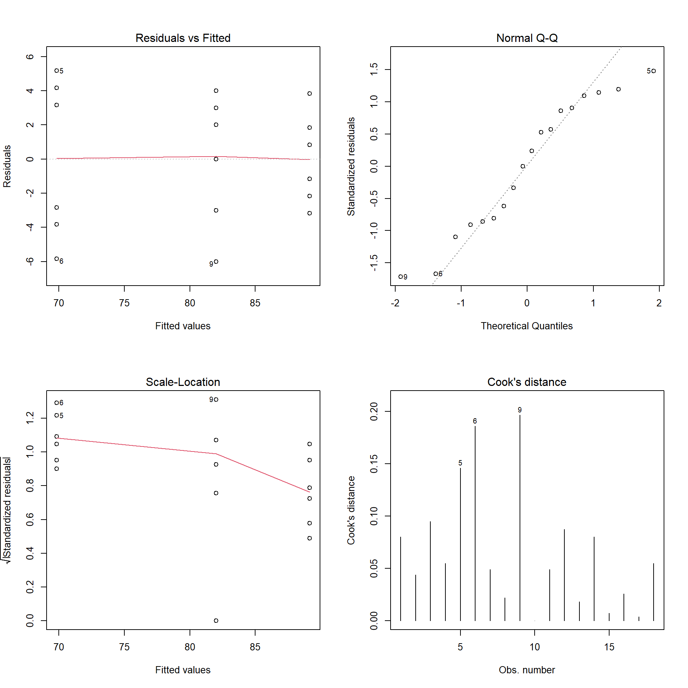
shapiro.test(height_lm$residuals)##
## Shapiro-Wilk normality test
##
## data: height_lm$residuals
## W = 0.933, p-value = 0.2192# Bartlett Test of Homogeneity of Variances
bartlett.test(height ~ trt, data = height_data)##
## Bartlett test of homogeneity of variances
##
## data: height by trt
## Bartlett's K-squared = 1.4594, df = 2, p-value = 0.482# Levene's Test for Homogeneity of Variance - Mean
leveneTest(height_lm, center="mean")## Levene's Test for Homogeneity of Variance (center = "mean")
## Df F value Pr(>F)
## group 2 2.725 0.09783 .
## 15
## ---
## Signif. codes: 0 '***' 0.001 '**' 0.01 '*' 0.05 '.' 0.1 ' ' 1# Levene's Test for Homogeneity of Variance - Median
leveneTest(height_lm, center="median")## Levene's Test for Homogeneity of Variance (center = "median")
## Df F value Pr(>F)
## group 2 2.2899 0.1356
## 15# Fligner-Killeen test of homogeneity of variances
fligner.test(height ~ trt, data = height_data)##
## Fligner-Killeen test of homogeneity of variances
##
## data: height by trt
## Fligner-Killeen:med chi-squared = 3.9612, df = 2, p-value = 0.138For our second analysis, which is the RCBD, we will use a new dataset. This data set contains the yield (yld) as affected by four treatment (trt). Now, in addition to the treatment, we have to consider the constraints that are applied to the experimental units, which are defined as blocks. In many analyses, this forms the basis for more complicated analysis that considered fixed and random effects. For the purpose of this example, we will maintain our base assumptions following from example 1.
data_RCBD_yld <- data.frame(
trt = rep(c("A", "B", "C", "D"),4),
blk = as.factor(rep(1:4,each = 4)),
yld = c(92.3, 111.6, 122.0, 116.6,
99.5, 119.1, 115.5, 113.2,
98.0, 118.9, 118.2, 117.0,
98.0, 118.2, 105.1, 117.8))
data_RCBD_yld## trt blk yld
## 1 A 1 92.3
## 2 B 1 111.6
## 3 C 1 122.0
## 4 D 1 116.6
## 5 A 2 99.5
## 6 B 2 119.1
## 7 C 2 115.5
## 8 D 2 113.2
## 9 A 3 98.0
## 10 B 3 118.9
## 11 C 3 118.2
## 12 D 3 117.0
## 13 A 4 98.0
## 14 B 4 118.2
## 15 C 4 105.1
## 16 D 4 117.8ggplot(data_RCBD_yld, aes(x=trt, y = yld))+
geom_boxplot(outlier.alpha = 0)+
geom_jitter(aes(fill = trt), width = 0.2, shape = 21, size = 5, show.legend = FALSE)+
labs(y = "Yield (bu/ac)", x = "Treatment")+
theme(axis.text = element_text(color = "black"))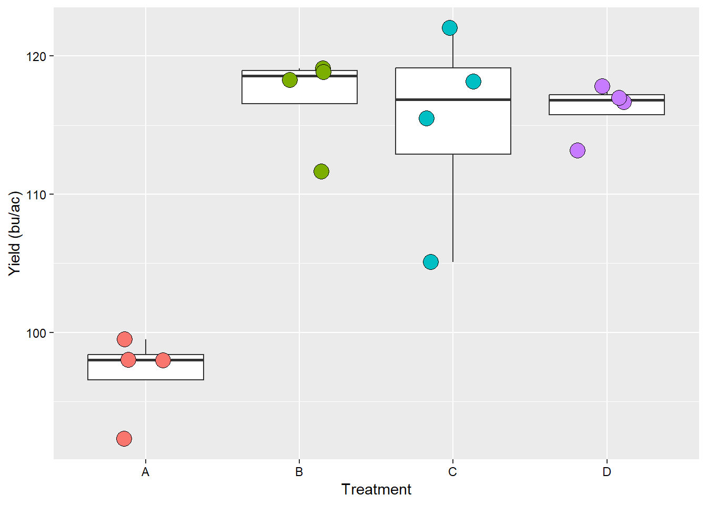
Note that our lm output contains the effect of the
blocking. Although it was not significant (p <0.001), we must to keep
it in our analysis, because our experiment layout was not completely
random, but constrained by the blocks.
RCBD_yld_lm <- lm(yld ~ trt + blk , data = data_RCBD_yld)
summary(RCBD_yld_lm)##
## Call:
## lm(formula = yld ~ trt + blk, data = data_RCBD_yld)
##
## Residuals:
## Min 1Q Median 3Q Max
## -8.5625 -1.5125 0.6875 2.1750 7.4875
##
## Coefficients:
## Estimate Std. Error t value Pr(>|t|)
## (Intercept) 96.263 3.229 29.811 2.63e-10 ***
## trtB 20.000 3.452 5.794 0.000262 ***
## trtC 18.250 3.452 5.287 0.000503 ***
## trtD 19.200 3.452 5.562 0.000351 ***
## blk2 1.200 3.452 0.348 0.736119
## blk3 2.400 3.452 0.695 0.504461
## blk4 -0.850 3.452 -0.246 0.811029
## ---
## Signif. codes: 0 '***' 0.001 '**' 0.01 '*' 0.05 '.' 0.1 ' ' 1
##
## Residual standard error: 4.882 on 9 degrees of freedom
## Multiple R-squared: 0.8405, Adjusted R-squared: 0.7342
## F-statistic: 7.905 on 6 and 9 DF, p-value: 0.003495anova(RCBD_yld_lm)## Analysis of Variance Table
##
## Response: yld
## Df Sum Sq Mean Sq F value Pr(>F)
## trt 3 1106.31 368.77 15.4727 0.0006752 ***
## blk 3 24.13 8.04 0.3374 0.7988743
## Residuals 9 214.50 23.83
## ---
## Signif. codes: 0 '***' 0.001 '**' 0.01 '*' 0.05 '.' 0.1 ' ' 1There is several packages in R that can do the means
comparison, below we will use some options that are presented in the
agricolae package.
# Least significant difference
RCBD_yld_LSD <- LSD.test(RCBD_yld_lm, trt="trt", alpha=0.05)
RCBD_yld_LSD## $statistics
## MSerror Df Mean CV t.value LSD
## 23.83361 9 111.3125 4.385822 2.262157 7.809131
##
## $parameters
## test p.ajusted name.t ntr alpha
## Fisher-LSD none trt 4 0.05
##
## $means
## yld std r LCL UCL Min Max Q25 Q50 Q75
## A 96.95 3.179623 4 91.42811 102.4719 92.3 99.5 96.575 98.00 98.375
## B 116.95 3.587478 4 111.42811 122.4719 111.6 119.1 116.550 118.55 118.950
## C 115.20 7.242007 4 109.67811 120.7219 105.1 122.0 112.900 116.85 119.150
## D 116.15 2.028957 4 110.62811 121.6719 113.2 117.8 115.750 116.80 117.200
##
## $comparison
## NULL
##
## $groups
## yld groups
## B 116.95 a
## D 116.15 a
## C 115.20 a
## A 96.95 b
##
## attr(,"class")
## [1] "group"# Tukey
RCBD_yld_HSD <- HSD.test(RCBD_yld_lm, trt="trt", alpha=0.05)
RCBD_yld_HSD## $statistics
## MSerror Df Mean CV MSD
## 23.83361 9 111.3125 4.385822 10.77668
##
## $parameters
## test name.t ntr StudentizedRange alpha
## Tukey trt 4 4.41489 0.05
##
## $means
## yld std r Min Max Q25 Q50 Q75
## A 96.95 3.179623 4 92.3 99.5 96.575 98.00 98.375
## B 116.95 3.587478 4 111.6 119.1 116.550 118.55 118.950
## C 115.20 7.242007 4 105.1 122.0 112.900 116.85 119.150
## D 116.15 2.028957 4 113.2 117.8 115.750 116.80 117.200
##
## $comparison
## NULL
##
## $groups
## yld groups
## B 116.95 a
## D 116.15 a
## C 115.20 a
## A 96.95 b
##
## attr(,"class")
## [1] "group"# Duncan
RCBD_yld_DUN <- duncan.test(RCBD_yld_lm, trt="trt", alpha=0.05)
RCBD_yld_DUN## $statistics
## MSerror Df Mean CV
## 23.83361 9 111.3125 4.385822
##
## $parameters
## test name.t ntr alpha
## Duncan trt 4 0.05
##
## $duncan
## Table CriticalRange
## 2 3.199173 7.809131
## 3 3.339138 8.150781
## 4 3.419765 8.347591
##
## $means
## yld std r Min Max Q25 Q50 Q75
## A 96.95 3.179623 4 92.3 99.5 96.575 98.00 98.375
## B 116.95 3.587478 4 111.6 119.1 116.550 118.55 118.950
## C 115.20 7.242007 4 105.1 122.0 112.900 116.85 119.150
## D 116.15 2.028957 4 113.2 117.8 115.750 116.80 117.200
##
## $comparison
## NULL
##
## $groups
## yld groups
## B 116.95 a
## D 116.15 a
## C 115.20 a
## A 96.95 b
##
## attr(,"class")
## [1] "group"For the final part, we will take a look at a dataset from a factorial layout experiment with blocks. The data are the same as the example before, but now with the data that incorporates the resistant variety (the previous example only had information from the susceptible variety).
On important aspect of the factorial trials is that we can quantify the interaction between the factors. For example, treatment A performance will be better or worse depending on the level of variety resistance, which is different from the effect on treatment B.
data_yld_fac <- data.frame(
trt = rep(c("A", "A", "B", "B", "C", "C", "D", "D"),4),
var = rep(c("R", "S"),16),
blk = as.factor(rep(1:4,each = 8)),
yld = c(86.6, 92.3, 104.9, 111.6, 105.2, 122, 105.4, 116.6, 81.1, 99.5, 99,
119.1, 108.4, 115.5, 94.6, 113.2, 84.8, 98, 107.1, 118.9, 110.8, 118.2,
104.1, 117, 84.5, 98, 101.4, 118.2, 109.8, 105.1, 106.1, 117.8) )
data_yld_fac## trt var blk yld
## 1 A R 1 86.6
## 2 A S 1 92.3
## 3 B R 1 104.9
## 4 B S 1 111.6
## 5 C R 1 105.2
## 6 C S 1 122.0
## 7 D R 1 105.4
## 8 D S 1 116.6
## 9 A R 2 81.1
## 10 A S 2 99.5
## 11 B R 2 99.0
## 12 B S 2 119.1
## 13 C R 2 108.4
## 14 C S 2 115.5
## 15 D R 2 94.6
## 16 D S 2 113.2
## 17 A R 3 84.8
## 18 A S 3 98.0
## 19 B R 3 107.1
## 20 B S 3 118.9
## 21 C R 3 110.8
## 22 C S 3 118.2
## 23 D R 3 104.1
## 24 D S 3 117.0
## 25 A R 4 84.5
## 26 A S 4 98.0
## 27 B R 4 101.4
## 28 B S 4 118.2
## 29 C R 4 109.8
## 30 C S 4 105.1
## 31 D R 4 106.1
## 32 D S 4 117.8Note that in our analysis we have the term trt*var, this
the interaction between treatment (trt) and variety
resistance (var).
RCBD_yld_fac_lm <- lm(yld ~ trt + var + trt*var + blk , data = data_yld_fac)
summary(RCBD_yld_fac_lm)##
## Call:
## lm(formula = yld ~ trt + var + trt * var + blk, data = data_yld_fac)
##
## Residuals:
## Min 1Q Median 3Q Max
## -9.750 -1.350 0.475 1.972 6.688
##
## Coefficients:
## Estimate Std. Error t value Pr(>|t|)
## (Intercept) 84.3625 2.3782 35.474 < 2e-16 ***
## trtB 18.8500 2.8682 6.572 1.65e-06 ***
## trtC 24.3000 2.8682 8.472 3.24e-08 ***
## trtD 18.3000 2.8682 6.380 2.52e-06 ***
## varS 12.7000 2.8682 4.428 0.000234 ***
## blk2 -1.7750 2.0281 -0.875 0.391363
## blk3 1.7875 2.0281 0.881 0.388096
## blk4 -0.4625 2.0281 -0.228 0.821816
## trtB:varS 1.1500 4.0562 0.284 0.779557
## trtC:varS -6.0500 4.0562 -1.492 0.150689
## trtD:varS 0.9000 4.0562 0.222 0.826549
## ---
## Signif. codes: 0 '***' 0.001 '**' 0.01 '*' 0.05 '.' 0.1 ' ' 1
##
## Residual standard error: 4.056 on 21 degrees of freedom
## Multiple R-squared: 0.9124, Adjusted R-squared: 0.8707
## F-statistic: 21.88 on 10 and 21 DF, p-value: 6.591e-09aov(RCBD_yld_fac_lm) %>% summary()## Df Sum Sq Mean Sq F value Pr(>F)
## trt 3 2383.5 794.5 48.291 1.34e-09 ***
## var 1 1095.1 1095.1 66.562 6.00e-08 ***
## blk 3 52.1 17.4 1.055 0.389
## trt:var 3 69.5 23.2 1.407 0.268
## Residuals 21 345.5 16.5
## ---
## Signif. codes: 0 '***' 0.001 '**' 0.01 '*' 0.05 '.' 0.1 ' ' 1plot(RCBD_yld_fac_lm, which=1)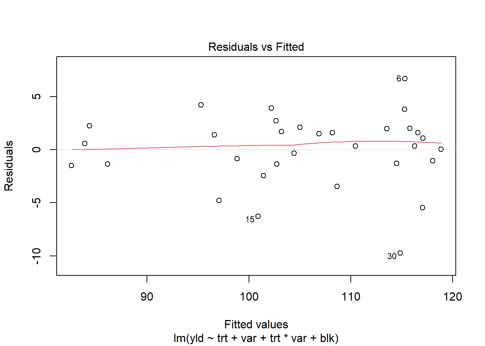
plot(RCBD_yld_fac_lm, which=2)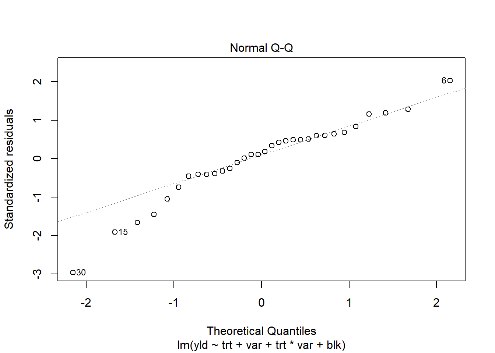
plot(RCBD_yld_fac_lm, which=3)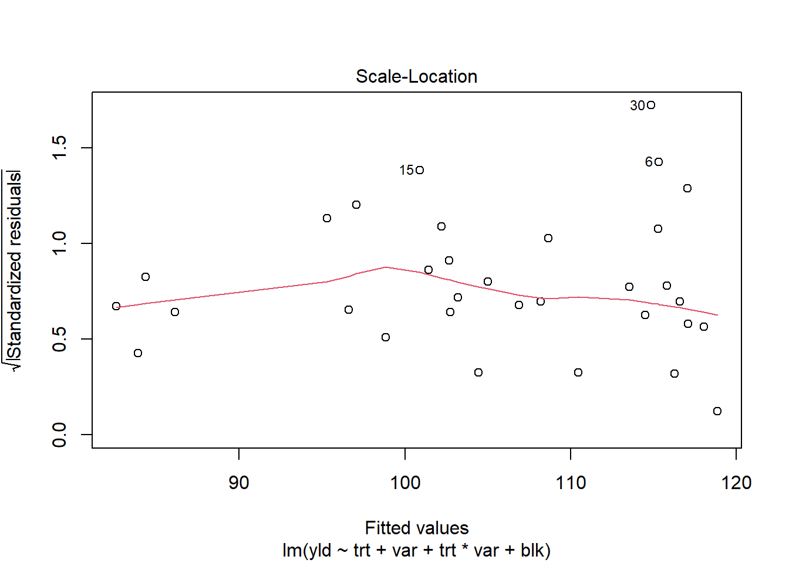
The package emmeans provides not only mean comparisons
but also shows the pairwise differences between the treatments. This
means that not only we will have the information if the variety R is
different than variety S, but on average how large is the
difference.
library(emmeans)
# Contrast for treatment
emmeans(RCBD_yld_fac_lm, pairwise ~ trt, adjust = "none")## NOTE: Results may be misleading due to involvement in interactions## $emmeans
## trt emmean SE df lower.CL upper.CL
## A 90.6 1.43 21 87.6 93.6
## B 110.0 1.43 21 107.0 113.0
## C 111.9 1.43 21 108.9 114.9
## D 109.3 1.43 21 106.4 112.3
##
## Results are averaged over the levels of: var, blk
## Confidence level used: 0.95
##
## $contrasts
## contrast estimate SE df t.ratio p.value
## A - B -19.425 2.03 21 -9.578 <.0001
## A - C -21.275 2.03 21 -10.490 <.0001
## A - D -18.750 2.03 21 -9.245 <.0001
## B - C -1.850 2.03 21 -0.912 0.3720
## B - D 0.675 2.03 21 0.333 0.7426
## C - D 2.525 2.03 21 1.245 0.2268
##
## Results are averaged over the levels of: var, blk# Contrast for variety
emmeans(RCBD_yld_fac_lm, pairwise ~ var, adjust = "none")## NOTE: Results may be misleading due to involvement in interactions## $emmeans
## var emmean SE df lower.CL upper.CL
## R 99.6 1.01 21 97.5 102
## S 111.3 1.01 21 109.2 113
##
## Results are averaged over the levels of: trt, blk
## Confidence level used: 0.95
##
## $contrasts
## contrast estimate SE df t.ratio p.value
## R - S -11.7 1.43 21 -8.159 <.0001
##
## Results are averaged over the levels of: trt, blk# Although our interaction was not significant, here is an example of how to do the contrast for interaction
emmeans(RCBD_yld_fac_lm, pairwise ~ trt*var, adjust = "none")## $emmeans
## trt var emmean SE df lower.CL upper.CL
## A R 84.2 2.03 21 80.0 88.5
## B R 103.1 2.03 21 98.9 107.3
## C R 108.5 2.03 21 104.3 112.8
## D R 102.5 2.03 21 98.3 106.8
## A S 97.0 2.03 21 92.7 101.2
## B S 117.0 2.03 21 112.7 121.2
## C S 115.2 2.03 21 111.0 119.4
## D S 116.2 2.03 21 111.9 120.4
##
## Results are averaged over the levels of: blk
## Confidence level used: 0.95
##
## $contrasts
## contrast estimate SE df t.ratio p.value
## A R - B R -18.85 2.87 21 -6.572 <.0001
## A R - C R -24.30 2.87 21 -8.472 <.0001
## A R - D R -18.30 2.87 21 -6.380 <.0001
## A R - A S -12.70 2.87 21 -4.428 0.0002
## A R - B S -32.70 2.87 21 -11.401 <.0001
## A R - C S -30.95 2.87 21 -10.791 <.0001
## A R - D S -31.90 2.87 21 -11.122 <.0001
## B R - C R -5.45 2.87 21 -1.900 0.0712
## B R - D R 0.55 2.87 21 0.192 0.8498
## B R - A S 6.15 2.87 21 2.144 0.0439
## B R - B S -13.85 2.87 21 -4.829 0.0001
## B R - C S -12.10 2.87 21 -4.219 0.0004
## B R - D S -13.05 2.87 21 -4.550 0.0002
## C R - D R 6.00 2.87 21 2.092 0.0488
## C R - A S 11.60 2.87 21 4.044 0.0006
## C R - B S -8.40 2.87 21 -2.929 0.0080
## C R - C S -6.65 2.87 21 -2.319 0.0306
## C R - D S -7.60 2.87 21 -2.650 0.0150
## D R - A S 5.60 2.87 21 1.952 0.0643
## D R - B S -14.40 2.87 21 -5.021 0.0001
## D R - C S -12.65 2.87 21 -4.410 0.0002
## D R - D S -13.60 2.87 21 -4.742 0.0001
## A S - B S -20.00 2.87 21 -6.973 <.0001
## A S - C S -18.25 2.87 21 -6.363 <.0001
## A S - D S -19.20 2.87 21 -6.694 <.0001
## B S - C S 1.75 2.87 21 0.610 0.5483
## B S - D S 0.80 2.87 21 0.279 0.7830
## C S - D S -0.95 2.87 21 -0.331 0.7438
##
## Results are averaged over the levels of: blk# alternatives to adjust the p-value of multiple comparison
comp.tukey<-emmeans(RCBD_yld_fac_lm, pairwise ~ trt, adjust = "tukey")## NOTE: Results may be misleading due to involvement in interactionscomp.tukey$contrasts %>%
confint()## contrast estimate SE df lower.CL upper.CL
## A - B -19.425 2.03 21 -25.08 -13.77
## A - C -21.275 2.03 21 -26.93 -15.62
## A - D -18.750 2.03 21 -24.40 -13.10
## B - C -1.850 2.03 21 -7.50 3.80
## B - D 0.675 2.03 21 -4.98 6.33
## C - D 2.525 2.03 21 -3.13 8.18
##
## Results are averaged over the levels of: var, blk
## Confidence level used: 0.95
## Conf-level adjustment: tukey method for comparing a family of 4 estimatesplot(comp.tukey, comparisons="TRUE")## I bet you wanted to call this with just object[[1]] - use '[[]]' or which' if I'm wrong.
## See '? emm_list' for more information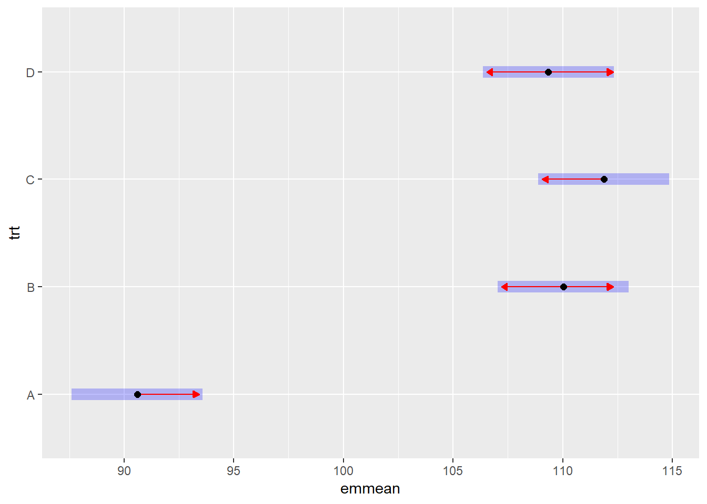
emmeans(RCBD_yld_fac_lm, pairwise ~ trt, adjust = "bonferroni")## NOTE: Results may be misleading due to involvement in interactions## $emmeans
## trt emmean SE df lower.CL upper.CL
## A 90.6 1.43 21 87.6 93.6
## B 110.0 1.43 21 107.0 113.0
## C 111.9 1.43 21 108.9 114.9
## D 109.3 1.43 21 106.4 112.3
##
## Results are averaged over the levels of: var, blk
## Confidence level used: 0.95
##
## $contrasts
## contrast estimate SE df t.ratio p.value
## A - B -19.425 2.03 21 -9.578 <.0001
## A - C -21.275 2.03 21 -10.490 <.0001
## A - D -18.750 2.03 21 -9.245 <.0001
## B - C -1.850 2.03 21 -0.912 1.0000
## B - D 0.675 2.03 21 0.333 1.0000
## C - D 2.525 2.03 21 1.245 1.0000
##
## Results are averaged over the levels of: var, blk
## P value adjustment: bonferroni method for 6 testsemmeans(RCBD_yld_fac_lm, pairwise ~ trt, adjust = "dunnett")## NOTE: Results may be misleading due to involvement in interactions## $emmeans
## trt emmean SE df lower.CL upper.CL
## A 90.6 1.43 21 87.6 93.6
## B 110.0 1.43 21 107.0 113.0
## C 111.9 1.43 21 108.9 114.9
## D 109.3 1.43 21 106.4 112.3
##
## Results are averaged over the levels of: var, blk
## Confidence level used: 0.95
##
## $contrasts
## contrast estimate SE df t.ratio p.value
## A - B -19.425 2.03 21 -9.578 <.0001
## A - C -21.275 2.03 21 -10.490 <.0001
## A - D -18.750 2.03 21 -9.245 <.0001
## B - C -1.850 2.03 21 -0.912 0.8220
## B - D 0.675 2.03 21 0.333 0.9891
## C - D 2.525 2.03 21 1.245 0.6363
##
## Results are averaged over the levels of: var, blk
## P value adjustment: dunnettx method for 6 tests